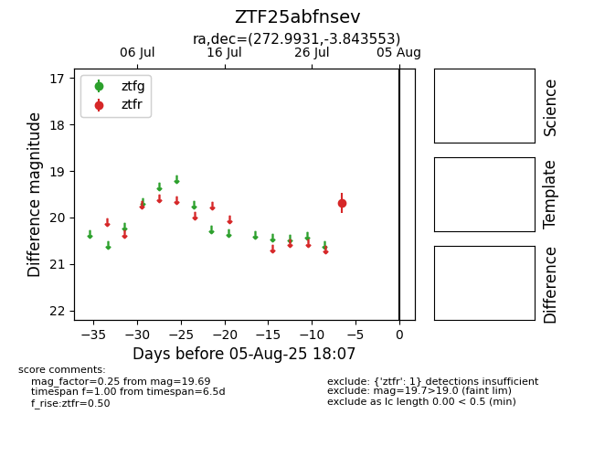

Target ZTF25abfnsev at 2025-08-05 22:30, see:
FINK: fink-portal.org/ZTF25abfnsev
Lasair: lasair-ztf.lsst.ac.uk/objects/ZTF25abfnsev
ALeRCE: alerce.online/object/ZTF25abfnsev
alt names
ZTF25abfnsev (ztf,fink)
coordinates:
equatorial (ra, dec) = (272.9931,-3.84355)
galactic (l, b) = (24.9625,+6.98393)
photometry
last ztfr=19.69
1 ztfr detections
